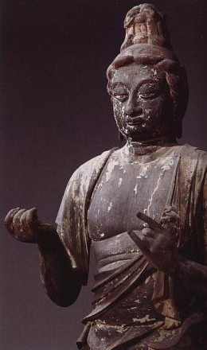

伝帝釈天 ―たいしゃくてん―
頭部乾漆天平時代、体部寄木造鎌倉時代、極彩色立像。普通梵天と一対を成し、仏法の守護神として崇められるが、 もとはインド教に於ける軍神で、古来より様々の形でインド神話に現われる大神。衣紋の彫りの強さ、上半身に見える、 引締まった厳しさ等に鎌倉彫刻の特性が感じられる。 「秋篠寺小誌・尊像略記」より
帝釈天とは？
古代インド神話の英雄神・インドラが前身とされている。天空を駆け抜け、 「インドラの矢」と呼ばれる雷で凶暴な魔神達と戦う。仏教に取り入れられると戦いの神という色合いは薄くなり、 慈悲深く柔和な性格に変わっている。梵天と並ぶ仏教の二大護法善神となり、仏教世界の中央にそびえる 須弥山（しゅみせん）の頂きから命あるもの全てを見守っている。大日如来を本仏とする密教では十二天の1人であり、 千手観音の眷属である二十八部衆の1人でもある。ちなみに映画、「天空の城ラピュタ」でラピュタが地上に放った 最終兵器「ラピュタの雷（いかづち）」は、インドラの矢がモデル。
帝釈天の像容
元々が戦いの神の為、甲冑を着たり中国の武官の姿をした像が多く、密教系の寺院ではインド神話時代の名残で 白像にまたがっている姿もある。手には雷を操る金剛杵・独鈷杵などの武器や蓮の茎を持つ場合が多い。 梵天と共に釈迦の脇侍として並ぶこともある。